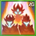
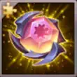
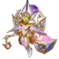

Lumira Titan Guide: Master the Light Summoner for Hero Wars Alliance
- By: Alexandre Domingos. .
Lumira is a unique and powerful summoner of Light in Hero Wars Alliance. Her summon will share the stats of its radiant owner and grant Energy to allies. Don't miss this true dawn of the Light element! With exceptional synergy with other Light Titans, Lumira becomes increasingly powerful when you have multiple Light allies on the battlefield.
As a Summoner, Lumira brings a completely different playstyle to the game. Her ability to create a Child of Light that scales with her stats makes her incredibly versatile in both PVP and Dungeon battles. Whether you're building a full Light team or using her as a support unit, understanding her mechanics is crucial for maximizing her potential.

Who Is Lumira?
Lumira is a Light element Titan with the Summoner role, positioned in the Middle Line of your team. Her unique ability to summon the Child of Light makes her a game-changer in strategic battles. As a summoner, she doesn't deal direct damage but instead empowers her team through buffs and summons.
- Role: Summoner
- Element: Light
- Position: Middle Line
- Synergy: Light Titans (especially with 6 Light Titans on the battlefield)
Lumira's strength lies in her ability to create a team support mechanism that rewards building around the Light element. When you have more Light Titans in your lineup, her passive skill Eternal Sunshine stacks bonuses that can completely change the outcome of battles.
The more Light Titans you have alive on the battlefield, the stronger Lumira and her entire team become. This makes team composition critical when using Lumira as your primary support Titan.
Lumira excels when you have a full Light team composition. Her summon scales with her own stats, making her incredibly powerful as you upgrade her gear and leveling. She provides consistent Energy regeneration to your team, keeping the battle momentum going in your favor.
Her passive skill Eternal Sunshine offers stacking bonuses based on the number of Light Titans alive on the battlefield. These bonuses range from increased damage against Dark Titans to a game-changing 50% reduction in incoming damage when you have all 6 Light Titans active. This makes her essential for any Light-focused team strategy.
Lumira Pros and Cons - Hero Wars Alliance
✅ Pros
- Exceptional support and Energy regeneration
- Scalable summon that inherits all her stats
- Powerful team synergies with Light Titans
- 50% damage reduction at 6 Light Titans
❌ Cons
- Limited direct damage output
- Requires full Light team for maximum effectiveness
- Summon can be targeted and eliminated
- Weak to Dark Titans
Lumira Skills Guide - Hero Wars Alliance
Lumira's skills are designed to support your team while dealing balanced damage. Understanding how each skill works is essential to maximize her effectiveness in both PVP and Dungeon battles. Let's dive into the mechanics of each ability.
Child of Light
Duration: 6.0 seconds
Lumira summons the Child of Light in front of the allied team. This summon does not move, attack, or take damage, but its Health scales directly with Lumira's Health. This means upgrading Lumira's equipment and increasing her Health stats directly increases the Child of Light's survivability.
⚔️ Important Note on Physical Attack: While the Child itself cannot attack, Lumira can deal Physical damage through her basic attacks. This is useful for generating Energy during battles, though it's not her primary function as a support Titan.
Energy Restoration: When the Child disappears, it grants Energy to the allied Titan with the lowest Energy amount. If there are no other targets available, it grants Energy to Lumira instead. The amount of Energy restored is determined by the proportion of the Child's remaining Health and cannot exceed 1000 Energy maximum.
⚡ Energy Calculation Formula:
Energy Restored = (Child's Remaining Health ÷ Child's Total Health) × up to 1000 Energy
🔍 CRITICAL UNDERSTANDING - Stats Priority:
- ✅ HEALTH: DIRECTLY AFFECTS ENERGY RESTORATION! Higher Health means the Child survives longer with more HP remaining, resulting in MORE Energy granted to your team. This is the PRIMARY stat for Lumira's support role.
- ⚔️ Physical Attack: Does NOT affect Energy restoration or the Child's abilities (since it cannot attack). Physical Attack only increases Lumira's own basic attack damage, which helps her generate Energy during battles. While useful, it's SECONDARY compared to Health for her support role.
Important Mechanics:
- The Child of Light is considered a Light Titan for all game interactions, synergies, and passive effects.
- The Child can be attacked and targeted by enemies, making it vulnerable to focused damage.
- Allied abilities do not affect the Child – it cannot be healed, buffed, or protected by teammate skills.
💭 Strategy Note: Lumira performs much better when paired with at least two other Light Titans. This setup already unlocks good PvP combinations, even in mixed-element teams. In both Dungeon and PvP, she synergizes perfectly with all Light Titans, providing exceptional support and energy regeneration through her skills. However, a full Light team can struggle offensively against Dark compositions, which counter their defensive advantages with strong burst damage and elemental superiority.

Eternal Sunshine (Passive)
Eternal Sunshine is Lumira's passive skill and arguably the most powerful part of her kit. This ability empowers all allied Light Titans on the battlefield with stacking bonuses that depend on the number of Light Titans remaining alive. This skill rewards you for building a full Light element team composition.
Stacking Bonuses by Light Titan Count:
- 2 Light Titans: +Bonus to Extra Attack against Dark Titans
- 3 Light Titans: +Bonus to Extra Defense against Dark Titans
- 4 Light Titans: Lumira gains +400 Energy when using abilities (dramatically faster ability rotation and ultimate spam)
- 5 Light Titans: Allied Light Titans stun the enemy with the highest Physical Attack for 4.0 seconds upon using their first ability
- 6 Light Titans: Reduces incoming damage by 50% for all allied Light Titans (essentially doubles team health pool)
The synergy progression is remarkable. At 4 Titans, Lumira's +400 Energy per ability use means you can chain ultimate abilities rapidly. At 5 Titans, the 4-second stun on first ability creates massive crowd control. At 6 Titans, the 50% damage reduction is potentially game-breaking, essentially doubling the effective health of your entire Light team and making them incredibly hard to defeat.
✨ Note: The summoned Child of Light is treated as a real Light Titan while active. This means that even if your team includes only 3 Light Titans and 2 other element Titans, Lumira can still trigger the 4th synergy bonus of her Eternal Sunshine skill (+Extra Energy for Lumira). This interaction makes her an excellent choice for PvP battles, allowing flexible team compositions that still benefit from Light synergy effects.
Best Skin for Lumira Titan - Hero Wars Alliance
Currently, Lumira only has access to the Default Skin, which provides Physical Attack bonus. Unfortunately, this stat doesn't align well with her primary support role.
Default Skin (Physical Attack)
Stats Gain: +Physical Attack +196800
⚠️ Important Analysis: As explained in the skills section above, Physical Attack does NOT improve Lumira's Energy restoration ability, which is her primary support function. Physical Attack only increases Lumira's own basic attack damage (the Child of Light summon cannot attack), which helps her generate Energy but is not critical. This makes the skin's benefit minimal for her core support role.
What Lumira Really Needs: Ideally, Lumira would benefit much more from a Health-based skin, as Health directly impacts:
- ✅ Lumira's survivability - Keeps her alive longer in battles
- ✅ Child of Light's tankiness - The summon inherits her Health stats
- ✅ Energy restoration amount - More HP means the Child survives longer, granting more Energy to allies
Evolution Priority for PVP: Low to Medium – While any stat increase helps, Physical Attack is not Lumira's priority. Only upgrade this skin if you have excess resources and all critical artifacts (Belav's Manuscript and Summon Seal) are already maxed.
Evolution Priority for Dungeon: Very Low – Lumira is not recommended for Dungeon content where Water, Earth, and Fire Titans dominate. Save your skin resources for more suitable Dungeon Titans instead.
💡 Resource Management Tip: Consider delaying or skipping this skin's evolution until Lumira receives a Health-based skin in future updates. Your skin stones and resources would be better invested in Titans whose skins directly improve their primary role. Focus on upgrading Lumira's Belav's Manuscript and Summon Seal artifacts instead, as these provide significantly better value for her support capabilities.
Lumira Artifacts - Evolution Priority for Hero Wars Alliance
Artifacts are crucial for maximizing Lumira's effectiveness in battles. IMPORTANT UPDATE: Since the Child of Light scales directly only with Lumira's Health (the summon cannot attack), the Summon Seal has become a top priority artifact alongside Belav's Manuscript. The massive Health bonus significantly increases both Lumira's survivability and her summon's tankiness.
Belav's Manuscript (Weapon Artifact)
Stats Gain: +Physical Attack +120000
Effect: When Lumira uses the Child of Light skill in combat, it triggers an effect that gives +Bonus Stats to the whole team for 9 seconds.
Evolution Priority for PVP: Very High – This is Lumira's best artifact. The team-wide stat boost when summoning the Child of Light creates incredible synergy. Every summon empowers your entire team, making teamfights extremely favorable.
Evolution Priority for Dungeon: Low – While the team buffs are helpful, Lumira struggles in Dungeon content since Water, Earth, and Fire Titans dominate these battles. Consider investing resources in more suitable Titans for Dungeon progression.

Light Crown Artifact
Stats Gain: +Extra Damage +213000, +Extra Defense +120600
Effect: +Extra Damage to Fire, Earth, and Water Titans and +Extra Defense from Fire, Earth, and Water Titans
Evolution Priority for PVP: Medium – The Crown provides solid offensive and defensive bonuses against multiple elements. While useful, it's not as critical as Belav's Manuscript for Lumira's support role.
Evolution Priority for Dungeon: Low – Lumira is not recommended for Dungeon content where Water, Earth, and Fire Titans are more effective. The Crown's bonuses don't compensate for her elemental disadvantage in these battles.

Summon Seal Artifact
Stats Gain: +Physical Attack +90000, +Health +4275000
Effect: Enhances Summoned Units – Provides direct bonuses to the Child of Light's effectiveness.
Evolution Priority for PVP: Very High – CRITICAL ARTIFACT! The massive +4,275,000 Health bonus is exceptional because the Child of Light scales directly with Lumira's Health, dramatically increasing both Lumira's survivability and the Child's tankiness. The +90,000 Physical Attack only helps Lumira's own basic attacks (the Child cannot attack), making it useful for Energy generation but secondary. The real value is in the Health bonus! This artifact is essential for maximizing Lumira's effectiveness.
Evolution Priority for Dungeon: Low – Despite the strong stats, Lumira is not optimal for Dungeon battles where Water, Earth, and Fire Titans excel. Invest in artifacts for more suitable Dungeon Titans instead.
Best Lumira Teams - Hero Wars Alliance
Lumira Team 1 - Amon (Attacker), Solaris (Super Titan), Lumira (Summoner), Iyari (Healer), Rigel (Tank and Shield)
| Best Lumira Teams - Hero Wars Alliance | ||||
|---|---|---|---|---|
| Amon |
|
 Lumira |
Iyari |
|
Team 1 Composition Strategy
Amon (Attacker): Primary damage dealer with high Physical Attack, capitalizing on Light synergy bonuses from Lumira's Eternal Sunshine passive.
Solaris (Super Titan): Provides additional damage output and crowd control effects, strengthening the offensive capabilities of the Light team composition.
Lumira (Summoner): Core support unit that summons the Child of Light, grants Energy to allies, and empowers the entire team with her Eternal Sunshine passive bonuses.
Iyari (Healer): Essential sustain provider keeping the team alive through prolonged battles, synergizing perfectly with Light element bonuses for increased survivability.
Rigel (Tank and Shield): Frontline protector that absorbs damage and shields allies, maximizing the defensive benefits from Lumira's 50% damage reduction when running full Light composition.
Team 1 - Weaknesses and Considerations
Weak Against:
- Full Earth Titan Teams: Earth element has natural advantage over Light Titans, reducing your team's overall effectiveness and making it harder to deal damage while taking increased damage from Earth attacks.
- Full Darkness Titan Teams: Darkness Titans counter Light element directly, negating many of Lumira's synergy bonuses and dealing devastating damage to your Light-focused composition.
Strategic Considerations: When facing these counter compositions, consider swapping 1-2 Light Titans for neutral or counter-element Titans to maintain better balance, though this will reduce Lumira's Eternal Sunshine passive bonuses.
Conclusion - Master Lumira for Victory
Lumira stands as one of the most strategically rewarding Titans in Hero Wars Alliance. Her unique summoning mechanics and powerful synergies with Light Titans make her an essential component of any Light-focused team. While she cannot carry battles alone, her support capabilities are unmatched when building the right team around her.
Focus on upgrading her artifacts, particularly Belav's Manuscript for its team-wide buff synergy. Build a complete Light team with at least 4 Light Titans to unlock her true potential. The 50% damage reduction from Eternal Sunshine at 6 Light Titans creates nearly unbeatable team compositions in both PVP and Dungeon battles.
Remember that Lumira's real strength lies in her ability to empower her entire team through Energy regeneration and massive stat bonuses. Invest in her development, pair her with strong Light Titans, and watch your team's performance skyrocket. She is truly the light that guides your team to victory!

Video suggestion
🔊 Multi-language audio (English primary) with subtitles! Discover the incredible new Light Summoner Lumira and master her powerful summoning mechanics!
🔊 Multi-language audio (Portuguese primary) with subtitles! Discover the incredible new Light Summoner Lumira and master her powerful summoning mechanics!
Explore new skills with our featured guides!
 Asherona Titan - Master the Fire Titan
Asherona Titan - Master the Fire Titan Tydus Water Titan Summoner Guide for Hero Wars Alliance
Tydus Water Titan Summoner Guide for Hero Wars Alliance Verdoc Titan Guide – Hero Wars Alliance: Master of Earth Summons
Verdoc Titan Guide – Hero Wars Alliance: Master of Earth SummonsLeave Your Opinion!
Did you like our Lumira Guide for Hero Wars Mobile? Is there something you didn't understand or would like to suggest changes to? We invite you to join our comment section on the Alexandre Games Blog page. Feel free to express your opinion, clarify your doubts, and share your suggestions.
Click the button below to get started: